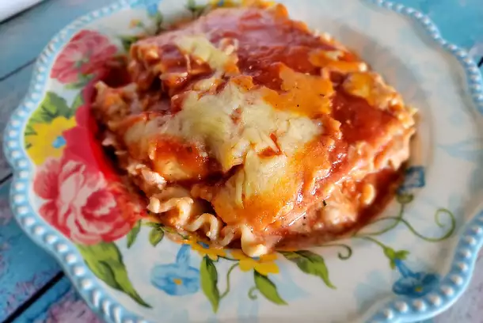

Cheesy Chicken Lasagna Recipe

Delicious cheesy lasagna recipe
This recipe will make your mind be blown away, its juicy and amazing
the cheese will melt in your mouth with every bite. A perfect recipe
for sunday night dinner with the family!
Ingredients
- 3 each skinless,boneless chicken breast halves
- 1 (8 ounce) package lasagna noodles
- 1 tablespoon butter
- 1 medium onion, chopped
- 2 teaspoons minced garlic
- 2(26.5 ounce) cans spaghetti sauce, divided
- 2(15 ounce) containers part-skim ricotta cheese
- 1/2 cup grated Parmesan cheese, divided
- 1 teaspoon Italian seasoning, or more to taste
- 1 cup shredded mozzarella cheese
- 1/2 cup shredded sharp cheddar cheese
Steps/Directions
- Preheat the oven to 350 degrees F (175 degrees C).
- Bring a large pot of water to a boil over medium-high heat and add chicken
breasts; reduce heat and let simmer until chicken falls apart easily with a fork
and is no longer pink, 10-15 minutes. Drain water, shred chicken with 2 forks,
and set aside.
- While chicken is boiling, bring a large pot of lightly salted water to a boil.
Cook lasagna noodles in the boiling water, stirring occasionally, until tender yet
firm to the bite, about 8 minutes, Drain and lay noodles in a single, flat layer
on a paper towel to dry.
- Heat butter in a small saute pan over medium-high heat. Saute onion
and garlic in the hot butter just until onion is translucent, 5-7 minutes.
- Mixed shredded chick, onion-garlic mixture, 1 cup spaghetti sauce, ricotta
cheese, 1/2 of the Parmesan cheese, and Italian seasoning together in a large bowl.
- Mix remaining spaghetti sauce and remaining Parmesan cheese together in another bowl.
Spread a thin layer on the bottom of a glass 9x13-inch baking dish. Layer 3 lasagna noodles,
spread chicken mixture on top, then add another thin layer of the sauce mixture. Repeat,
leaving a final layer of noodles on top. Top with remaining sauce. Sprinkle mozzarella
and Cheddar cheese on top.
- Bake in the preheated oven until heated through and cheese bubbles, about 45 minutes.